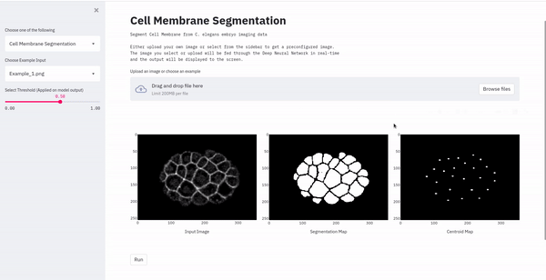
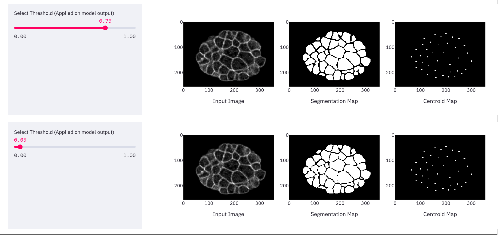
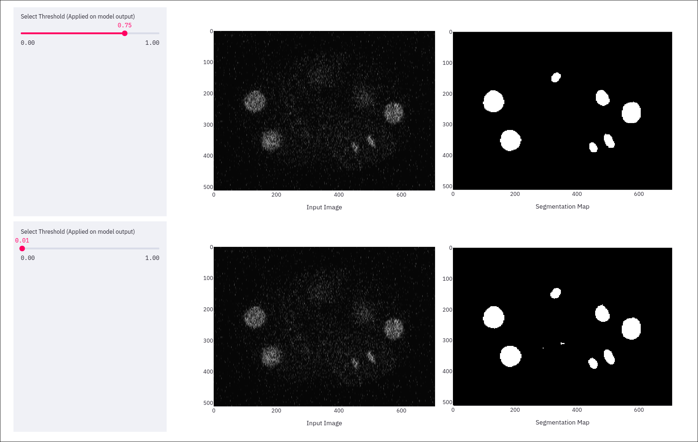

GSoC - Coding Period Week 9
Work Done This Week (August 2nd to August 8th)
-
Replaced the static images on the DevoLearn web-app with interactive Plotly images, this will allow users to :
- Zoom into images
- Pan across the zoomed image.
- View images in full-screen mode
- Save images as PNG
-
The gif below showcases the new interactive plots.

-
Added a threshold slider for the 2 segmentation models. This threshold is applied on the output from the model.
-
The edges are more pronounced when the threshold is set to a larger value, a low threshold results in more cell-area being covered by the segmentation map, leading to more accurate centroid mapping.
-
The images below illustrate the differences in output with diffferent threshold values.


-
Created first official deployment of devolearn web-app from the official repository, feel free to give it a try - https://devolearn.herokuapp.com/
-
The underlying code for the website could be found in the DevoLearn web-app repository
Planned:
- Move from Travis CI to Github Actions.
- Release a new DevoLearn version.
- Update the DevoLearn starter notebook.